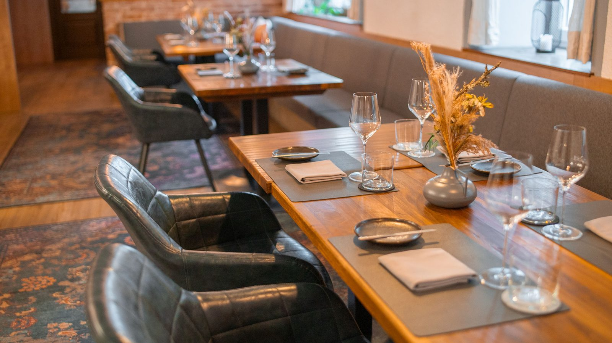
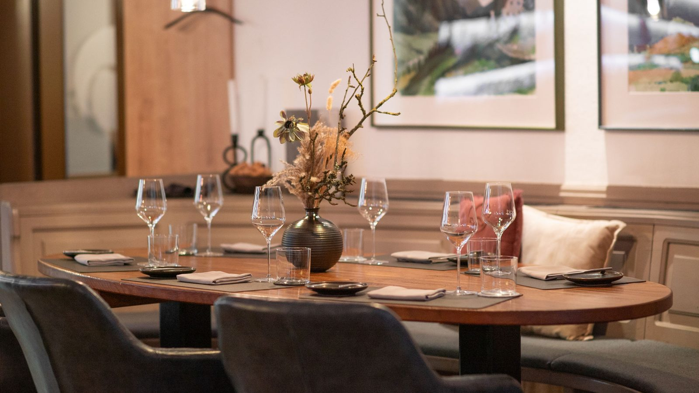
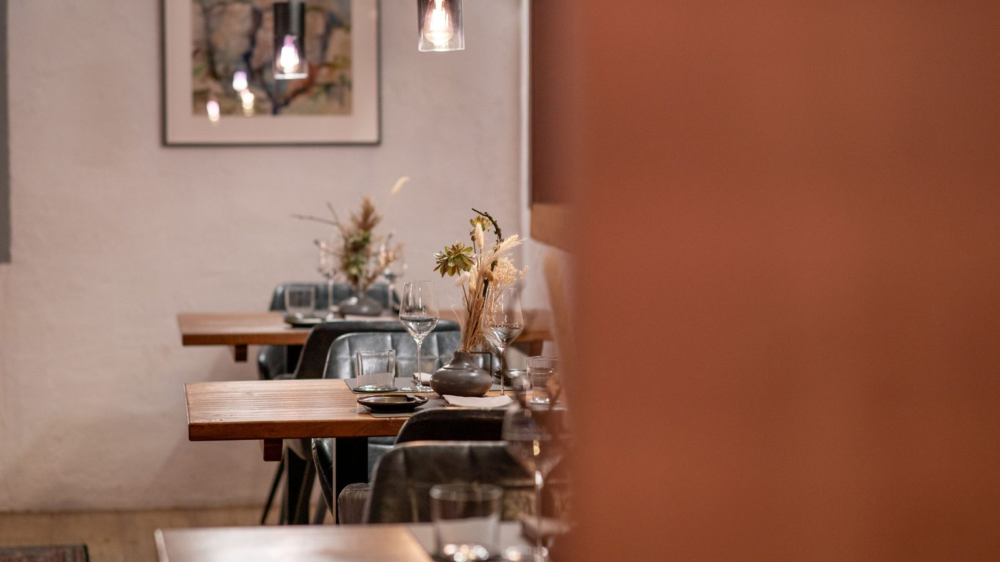
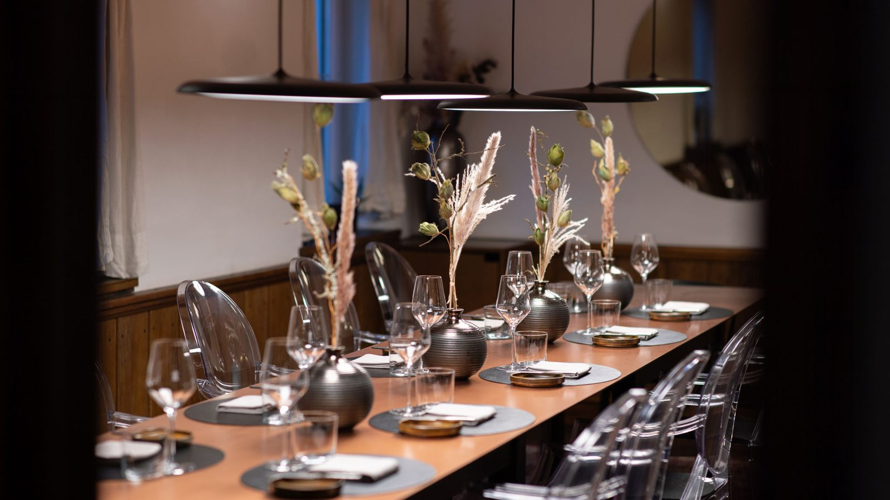

Genusszimmer
Der Hauptraum des Hauses für die Genussreise.

Claudia Stiglitz und Manuel Grabner laden zu Auszeiten gleichermaßen wie zu Genusszeiten.
Die Geschichte des 1898 erbauten, ehemaligen Gutshofs wird hochgehalten und bleibt spürbar, wenngleich das heutige Genusszimmer, die Gourmetstube und die Weinkammer durchaus im Jetzt ankommen durften.
Darüber hinaus lädt die freundliche Terrasse zu genussvollen Stunden in der Sonne – und der Kinderspielplatz im Garten ist nicht nur für die Kleinsten gedacht.
Neu eröffnet wurde der Holzpoldl am 1. Juni 2017 von einer mittlerweile vierköpfigen Familie, der die Übernahme eines geschichtsträchtigen Familienbetriebs sympathisch vorkam – eine Entscheidung, die niemals bereut wurde.
Der Hauptraum des Hauses für die Genussreise.
Der intimere Rahmen für kleinere Runden.
Wo die Flaschen lagern und Abende lange werden.
Sonnenstunden, Kinderspielplatz und der GARTEN by holzpoldl.
Die Gastronomie wurde Manuel Grabner sprichwörtlich in die Wiege gelegt. Hauseigene Produktveredelung, Tradition im Jetzt sowie geradlinige, ehrliche Gerichte sind seine Schwerpunkte im Landgasthaus 2.0 – erlebbar im Holzpoldl.
Lehre zum Koch im Genießerrestaurant Döllerer in Golling bei Salzburg – der Beginn einer langen und erfüllenden Reise.
Löwen Hotel im Montafon sowie Restaurant Esszimmer in Salzburg.
Seit diesem Jahr sind Manuel Grabner und Claudia Stiglitz ein Paar.
Küchenchef im Gourmethotel Rote Wand in Zug bei Lech am Arlberg. 2010 ging es gemeinsam nach Lech.
Dort erkocht er 2015, 2016 und 2017 mit jeweils 17 Punkten drei Hauben im Gault&Millau. 2015 kommt der erste Sohn zur Welt.
Zurück in der Heimat wird der Holzpoldl zum Herzensprojekt und ein wichtiger Teil der jungen Familie.
Der zweite Sohn kommt zur Welt – und fängt auch langsam an, den Holzpoldl zu erkunden.
Nach der Gourmetpause startet der Holzpoldl am 16. September mit dem neuen Küchenchef Michael Just und einer neuen Genusskarte.

Vier Hauben im Guide Gault&Millau, dazu Listungen im Michelin Guide, bei Falstaff und im Schlemmer Atlas.
Es zieht auch in schwierigen Zeiten an einem Strang. Jeder gibt täglich sein Bestes – und das spürt man. Vielen Dank, ihr seid spitze.
Du bist kontaktfreudig, motiviert, verantwortungsbewusst und arbeitest gerne im Team? Dann bist du bei uns genau richtig.
Bewirb dich jetzt – wir freuen uns auf dich.


